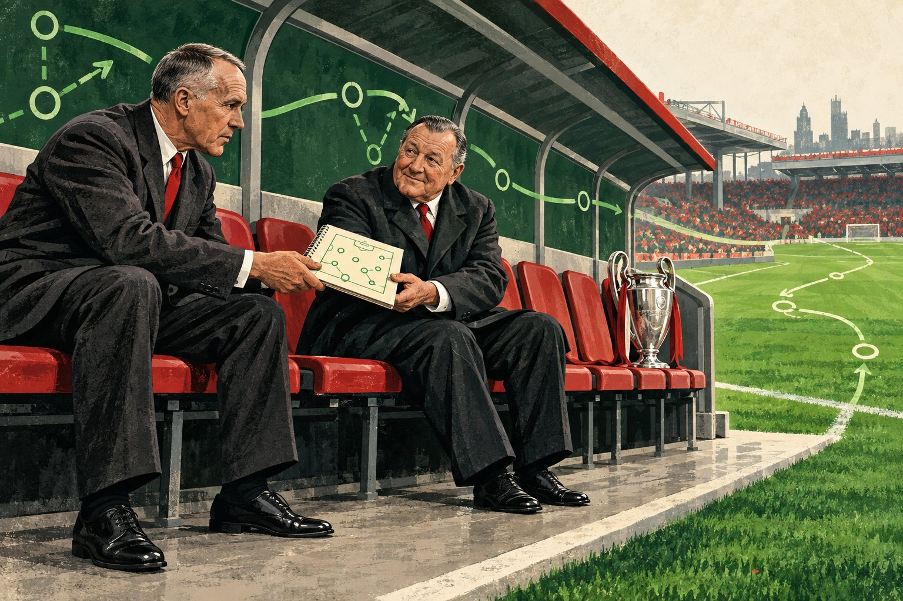
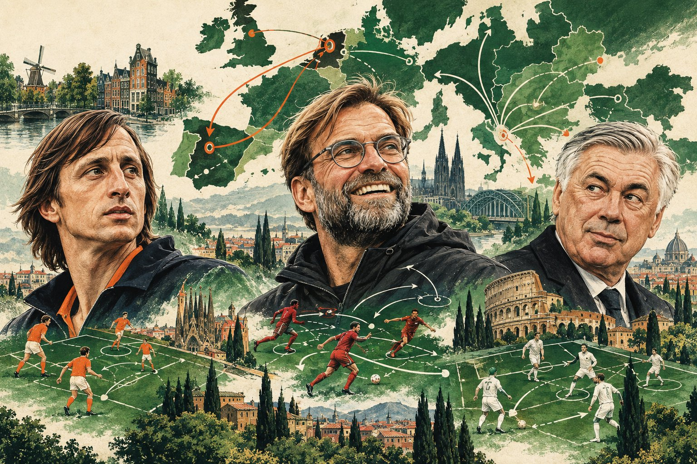
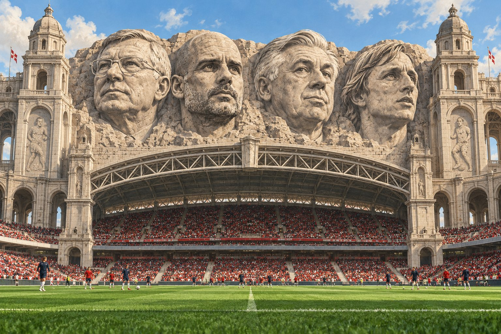

Does Stability Win Trophies? The question behind this site. Long reigns and trophies go together, but which one causes the other? And what happens after a dynasty ends? Read more → The Architect and The Journeyman Ferguson stayed 27 seasons, Mourinho never three and a half years. Two ways to win, and why the trophy count favours the one you would not expect. Read more →
The Global Tactician Which countries export their managers, and which leagues let them in? From English coaches at Ajax to the Spanish and Portuguese wave. Read more → The First Trophy Most managers who win something do it in their first season. Is that a law of football, or do they simply not get a second one? Read more →
The GOAT Debate Ferguson, Guardiola, Ancelotti or Cruyff? What the data adds to the argument about the greatest manager of all time. Read more →